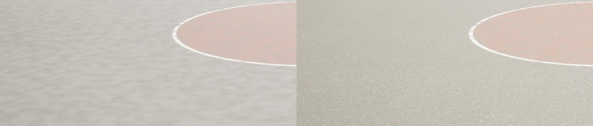
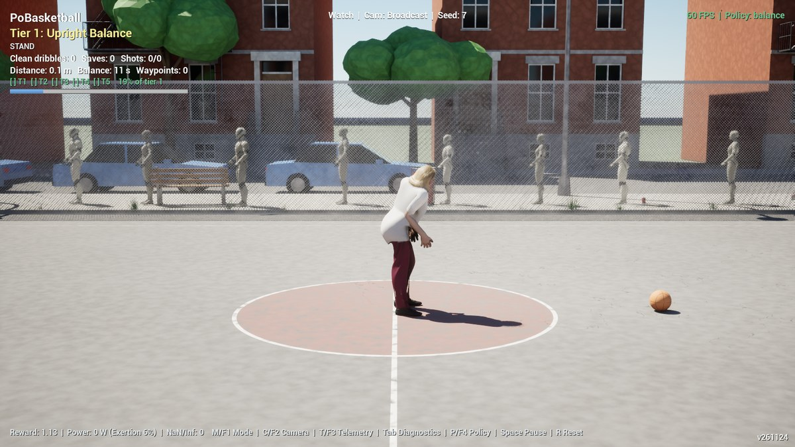
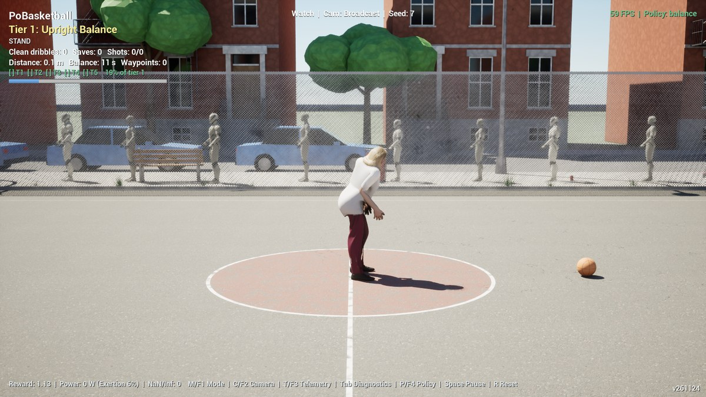
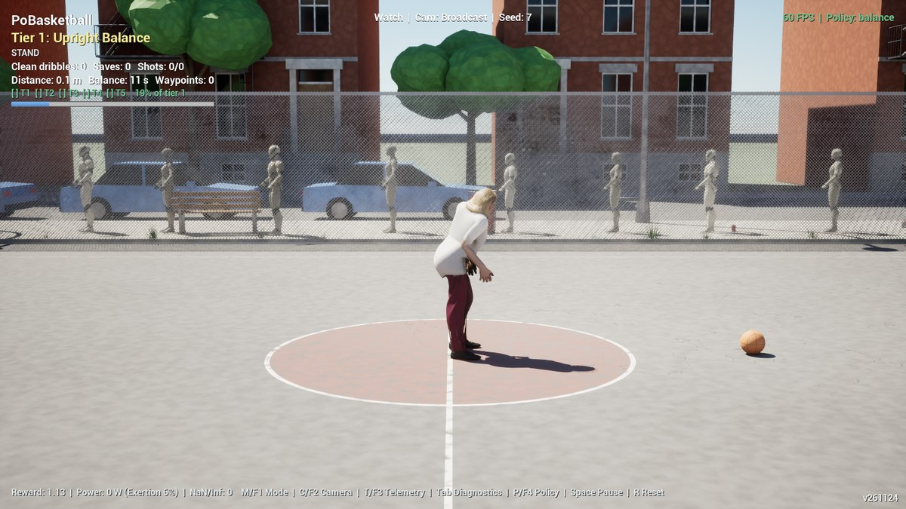
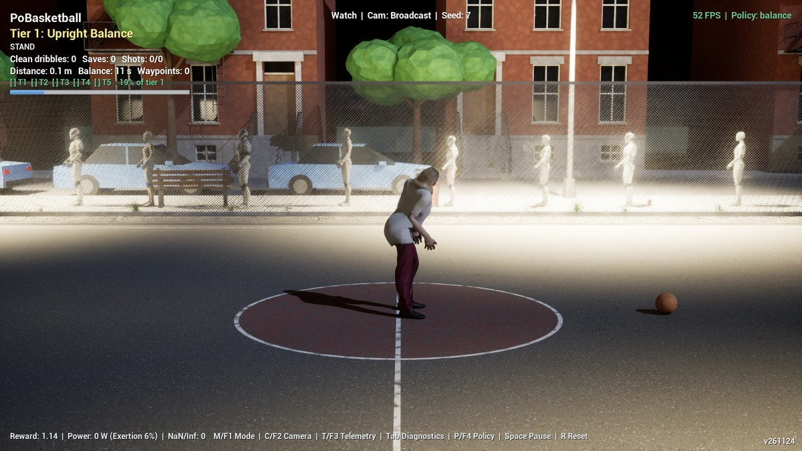

A Quixel Megascans asphalt scan from Fab (free, Standard License) is the bare asphalt under the procedural paint: lines, key, scuffs and cracks are unchanged. Because this repository is public and the licence does not allow redistributing the files, the scan is git-ignored: a fresh clone renders the procedural floor exactly as before. Engine captures, 1600×900, same seed, hour 13:34.





Content/Art/megascans.json (committed) lists each Fab listing, its 2K zip and which material parameters its textures fill.Scripts/import_megascans.py extracts only the listed maps from the zips in Downloads and imports them to
/Game/Project/Environments/Megascans/<id> (git-ignored). The generic texture set's OpenGL normal is green-flipped.M_CourtAsphalt gained ScanBaseColor, ScanNormal, ScanAmount (default 0),
ScanTileCm (200, the scan is 2×2 m) and ScanBrightness.AStreetballWorld::ApplyLocalScans swaps a material for a dynamic instance with the scan only when every texture loads.Brick, graffiti and graffiti-tag are in the Fab library but their downloads were blocked by Chrome's multiple-downloads setting; the manifest already lists them, and they import with the same script once the zips are in Downloads.